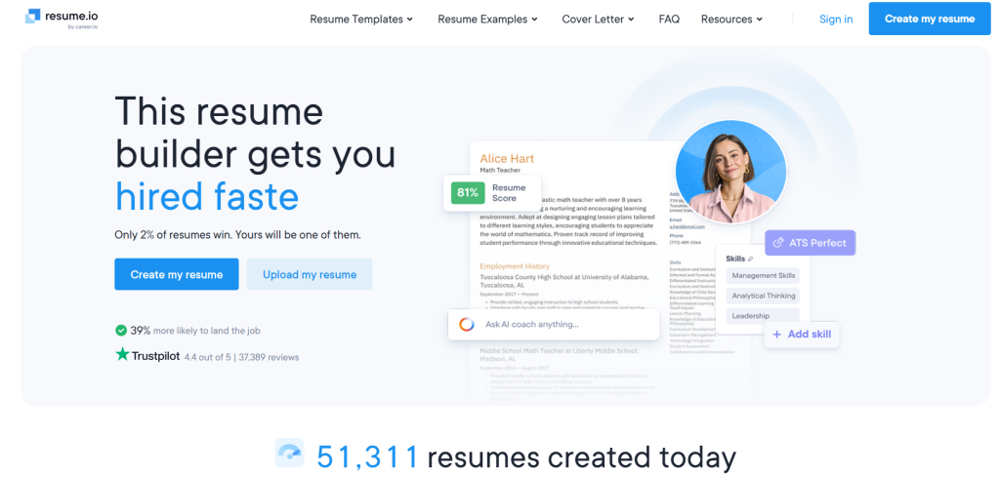
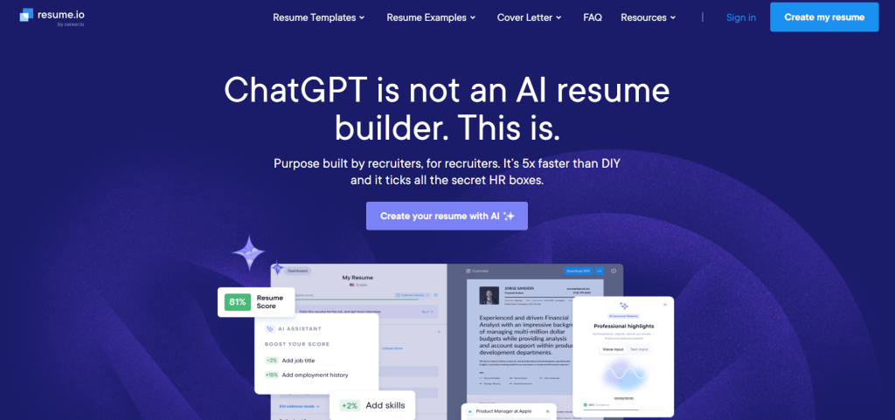
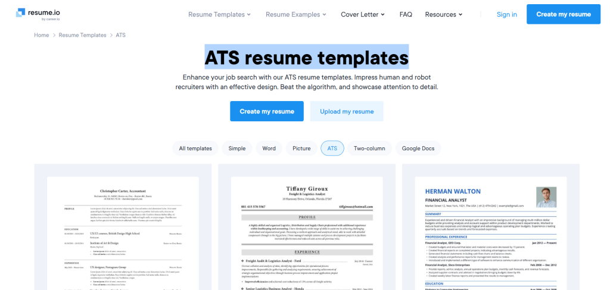
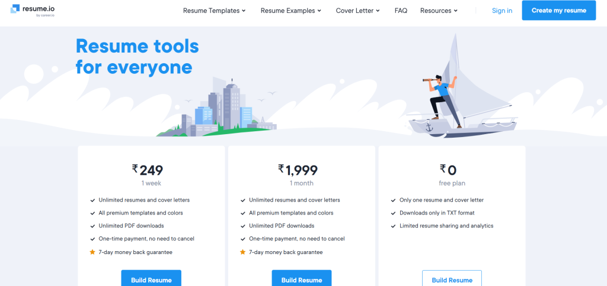
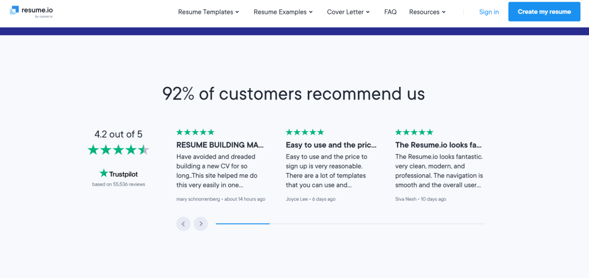

In a job market where AI recruiters scan applications in seconds and competition grows fiercer every quarter, having the right tools can make or break your chances. Resume.io has been a household name for years, but does its AI-powered resume builder still deliver in 2026? We put it through its paces—testing the latest Recruiter-AI features, templates, and job-matching tools—to bring you this no-fluff, hands-on review.
Whether you’re a fresh graduate staring at a blank page, a mid-career professional switching industries, or an executive polishing your next big move, this deep dive will show you exactly what Resume.io offers, where it shines, and where it falls short. Spoiler: it’s fast, beginner-friendly, and packed with extras most builders skip. But is the price worth it? Let’s find out.
What Makes Resume.io’s AI Resume Builder Stand Out in 2026?

Resume.io isn’t just another template site. It’s evolved into a full career platform that combines AI writing smarts with practical job-search firepower. Powered by what the company calls Recruiter-AI, the tool learns from millions of successful applications and real hiring data. Unlike generic ChatGPT prompts that often sound robotic and get flagged by recruiters, Resume.io’s AI is purpose-built for resumes and cover letters.
You can start from scratch, upload an old resume, or even paste your LinkedIn profile. The AI then suggests professional summaries, bullet points packed with action verbs, and skill highlights tailored to your industry. In 2026, the platform claims to help users create a solid first draft in about 10 minutes—10 times faster than doing it manually. And yes, it’s designed from the ground up to beat Applicant Tracking Systems (ATS) that 99% of large companies use.
Head over to the official site to try it yourself: Resume.io.
Core Features That Actually Help You Land Interviews
AI Writing That Feels Human (With a Recruiter’s Touch)

The star of the show is the Recruiter-AI assistant. Tell it about your experience in plain English—or even use the voice input feature—and it generates polished bullet points, achievements, and professional summaries. It pulls in industry-specific keywords without overstuffing, which helps your resume rank higher in ATS scans.
One standout perk: the job post analyzer. Paste a job description or link, and the AI instantly rewrites your resume to match. It highlights where your experience aligns and suggests tweaks to boost relevance. Users report this feature alone can increase interview callbacks dramatically.
The AI also generates matching cover letters in seconds. No more writer’s block—just smart, customized letters that feel personal. Check out Resume.io’s own guide on AI resume building here: Resume.io AI Resume Builder.
Stunning, ATS-Optimized Templates for Every Career Stage

Resume.io offers more than 30 recruiter-tested templates in 2026, ranging from clean corporate looks to modern creative designs. Popular picks include the Essential template (used by over 11 million people) and several dedicated ATS versions like Prime ATS and Pure ATS. Each comes with matching cover letter designs, so your entire application package looks cohesive.
You can drag-and-drop sections, change colors, fonts, and layouts on the fly. The editor even gives real-time feedback on length, readability, and ATS compatibility. Whether you’re in tech, healthcare, finance, or education, there’s a style that fits without looking gimmicky.
Beyond the Resume: 18+ Career Tools in One Dashboard
This is where Resume.io pulls ahead of pure resume builders. Once your document is ready, you unlock:
- Job distribution and auto-apply features
- A built-in job tracker to organize applications
- Interview preparation tools with practice questions
- Salary analysis and negotiation guides
- Profile optimization for LinkedIn and other platforms
In 2026, the platform even matches your resume to open roles pulled from the web. One in three users reportedly land interviews within a month, according to the site’s stats.
Recent X (formerly Twitter) conversations highlight this all-in-one appeal. For example, users compiling lists of top ATS-friendly tools frequently name Resume.io as the quick builder that handles everything from drafting to distribution: see this thread from @Sarthak4Alpha recommending it alongside other favorites.
Step-by-Step: How to Build Your Resume on Resume.io in 2026
Getting started is refreshingly simple:
- Sign up for free and choose a template.
- Import data from LinkedIn, upload an old PDF, or start fresh.
- Let AI take over—describe your roles, and watch it generate content.
- Paste a target job posting for instant tailoring.
- Review suggestions, add quantifiable achievements (numbers matter!), and tweak until it sounds like you.
- Download as PDF (paid plans) or TXT (free tier).
The interface feels modern and intuitive on both desktop and mobile. Auto-save keeps everything safe, and the spell-checker catches embarrassing typos before they reach a recruiter.
Pricing Plans: What You Actually Get in 2026

Resume.io keeps it straightforward with three main options. Here’s the breakdown:
| Plan | Price | Best For | Key Perks | Limitations |
|---|---|---|---|---|
| Free | $0 | Testing the waters | 1 resume + 1 cover letter, basic AI, TXT export | No PDF downloads, limited templates |
| 7-Day Trial | $2.95 | Quick full access | Unlimited resumes/cover letters, all templates, PDF downloads, full AI | Auto-renews at $29.95 every 4 weeks |
| Quarterly | $49.95 (billed every 3 months) | Serious job seekers | Everything unlimited + all 18 career tools | Subscription model |
Note: There’s a 7-day money-back guarantee, but users on forums like Reddit often warn about remembering to cancel before the trial ends to avoid surprise charges. Always double-check your account settings. See current pricing directly on their site: Resume.io Pricing.
Real User Experiences: The Good, the Bad, and the Honest
With over 55,000 Trustpilot reviews averaging 4.2 out of 5 stars, most people love how fast and polished the results feel. Beginners especially rave about the guided process that eliminates guesswork.

On Reddit, threads from early 2026 praise the slick UI and how quickly you can throw together a professional resume. One user in r/resumemind called it “the Goliath” for its ease, perfect for business roles.
However, some complaints pop up around the subscription model and the need to manually edit AI suggestions to avoid sounding generic. A few recent Reddit posts mention frustration with cancellation processes, echoing older concerns about auto-renewals. On the flip side, many say the investment pays off when they start seeing more interview requests.
How Resume.io Compares to Other Top AI Builders in 2026
Resume.io excels as an all-in-one platform, but it’s not the absolute best at pure ATS optimization or creative design. Here’s a quick side-by-side based on 2026 reviews:
- Vs. Rezi.ai: Rezi offers deeper keyword targeting and a Rezi Score metric. Resume.io feels more polished for beginners and includes job tools Rezi lacks.
- Vs. Teal HQ: Teal shines for heavy job trackers. Resume.io matches on tracking but adds easier AI writing and cover letters.
- Vs. Kickresume: Kickresume wins on beautiful designs and one-click generation from a job title. Resume.io provides stronger job-matching and distribution.
If you want templates plus a complete job-search suite, Resume.io often edges out the competition.
Pros and Cons of Resume.io AI Resume Builder
Pros
- Extremely user-friendly—even for non-techies
- Fast AI assistance that actually sounds professional
- Strong ATS focus with dedicated templates
- Excellent value if you use the full suite of career tools
- Regular updates and new features rolling out in 2026
Cons
- Free tier is very limited (no PDF exports)
- Subscription can feel pricey for occasional users
- AI suggestions sometimes need heavy personalization
- Auto-renewal requires vigilance to avoid unwanted charges
Pro Tips to Maximize Your Resume.io Experience
- Always quantify achievements before letting AI enhance them (“increased sales 35%” beats “improved sales”).
- Test multiple templates—sometimes a simple ATS one outperforms a fancy design.
- Use the job analyzer on every application for the best match scores.
- Pair your new resume with a strong LinkedIn profile using the platform’s optimization tips.
- Export and run through a free third-party ATS scanner for extra peace of mind.
Job seekers on platforms like X continue sharing success stories. One recent post noted Resume.io’s templates as a solid choice for quick, professional results in competitive fields.
The Verdict: Is Resume.io Worth It for Your 2026 Job Search?
Resume.io’s AI resume builder remains a strong contender in 2026, especially if you value speed, simplicity, and an all-in-one career dashboard. It won’t magically write your entire professional story, but it gives you a massive head start with recruiter-approved language and ATS smarts.
For beginners or anyone applying to multiple roles, the convenience and extra tools make the price reasonable—provided you cancel if you only need a one-off resume. Serious job hunters who plan to use the job tracker and interview prep will likely see the best return on investment.
Ready to build a resume that actually gets noticed? Head to Resume.io and start your free draft today. Your next opportunity could be just a few clicks away.
What’s your experience with Resume.io or other AI builders? Drop your thoughts in the comments—we read every one and love hearing real success stories from 2026 job hunters!